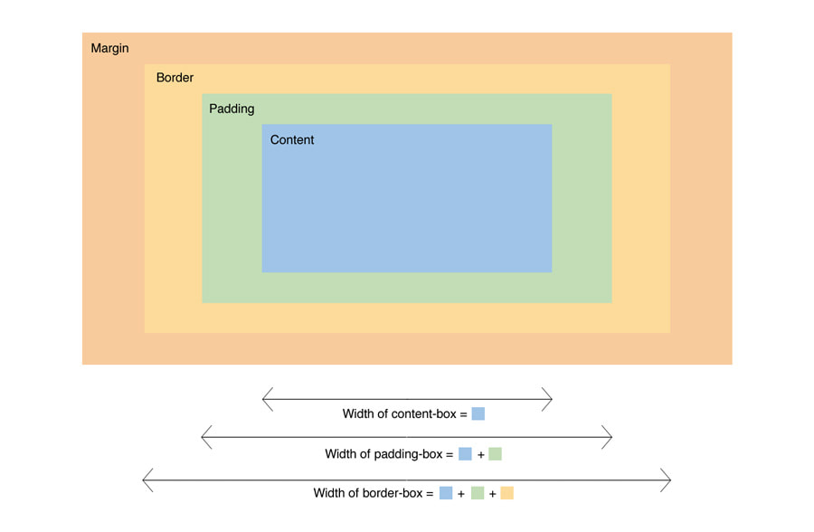
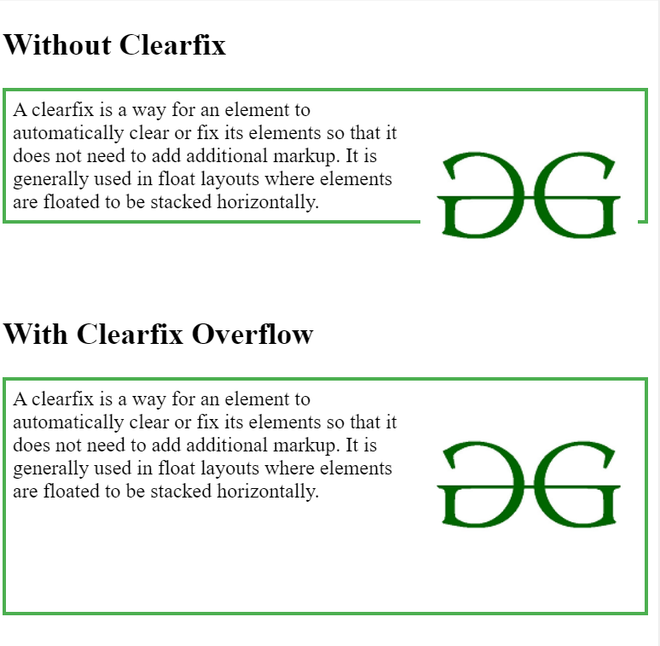
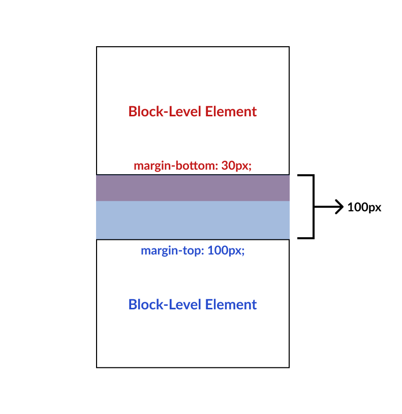
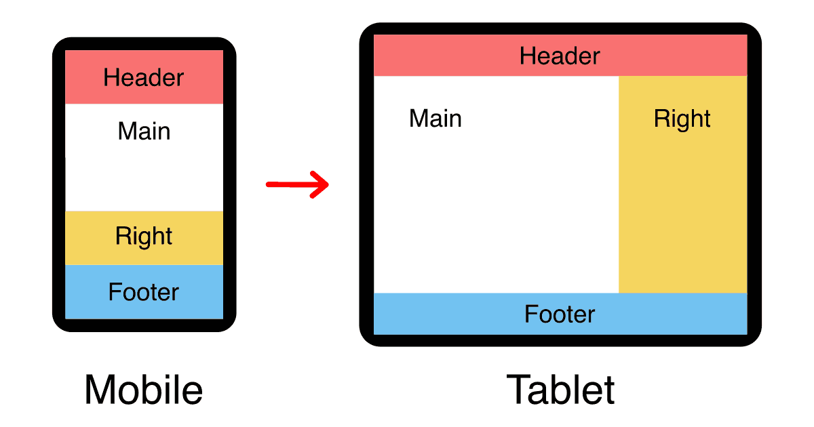

What is a box model in CSS? Give box-sizing property definition
The CSS box model defines the size and location of elements on a web page, including content, margins, borders, and margins. Content is information inside the element, indentation is the space around the content, border is the line separating the element, margins are the space around the element, including indents and borders.

What is a “clearfix hack” and when does it need to be applied?
Clearfix is a method that allows you to automatically fix problems with the alignment of elements in the layout, especially when using floating elements. It prevents the need to add additional tags or styles to correctly display elements on the page. This is especially useful when creating horizontal layouts where the elements must be aligned correctly.

What is a “margin collapse” and what are the use cases for margin: auto and negative margin values?
Margin collapse is a common behavior in CSS where the vertical margins of two adjacent block-level elements collapse, resulting in a single margin space between them. The margin space will be equal to the larger of the two margins, effectively combining them.The "margin: auto" property is frequently employed to horizontally center elements within their parent container. When applied to a block-level element, it evenly distributes the remaining space around the element, effectively centering it horizontally.Negative margin values are utilized to fine-tune the positioning of elements. They can be used to overlap elements or bring them closer together. However, it's important to exercise caution when using negative margins, as they have the potential to unpredictably impact the layout, particularly when combined with other layout techniques.


What was the problem with achieving Holy Grail layout?
The main problem that can be encountered when creating a Holy Grail layout is to maintain the same height for the columns so that the central column can adjust to the content while ensuring the flexibility of the layout.

What are the modern ways to achieve Holy Grail layout?
Modern CSS techniques like Flexbox and Grid Layout have made it easier to create complex layouts like the Holy Grail layout. Flexbox allows flexible alignment and resizing of elements within a container by using display: flex;. Grid Layout offers a two-dimensional grid system for precise layout control, simplifying complex arrangements with minimal code. These techniques provide improved browser support and cleaner code, empowering developers to build responsive layouts effortlessly.